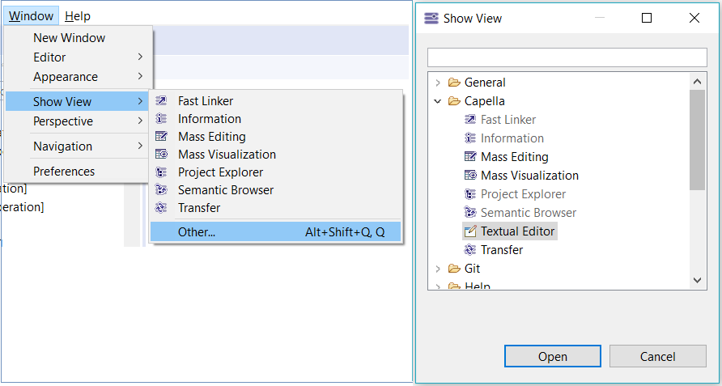
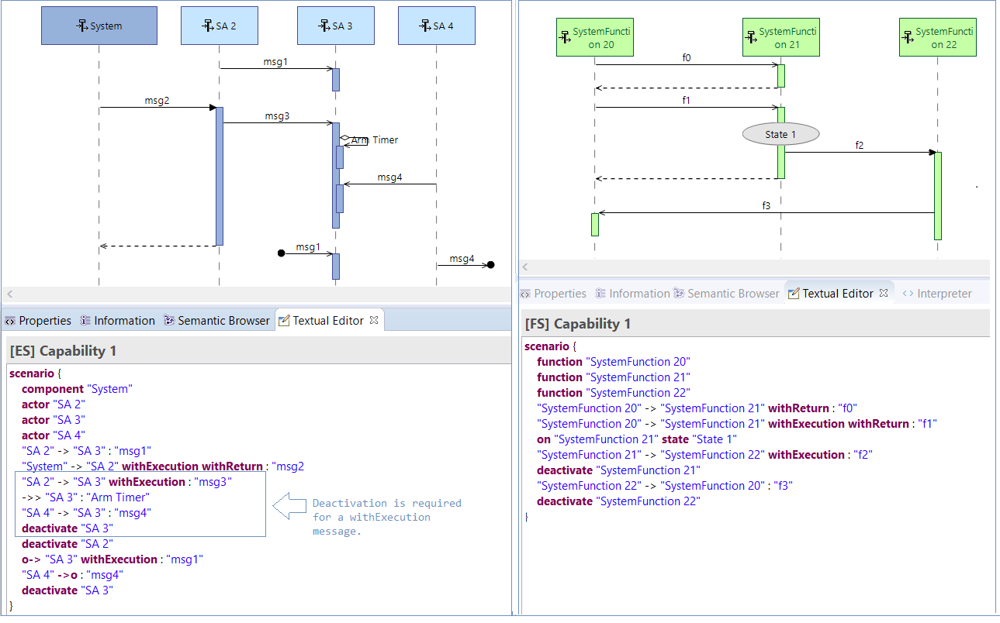
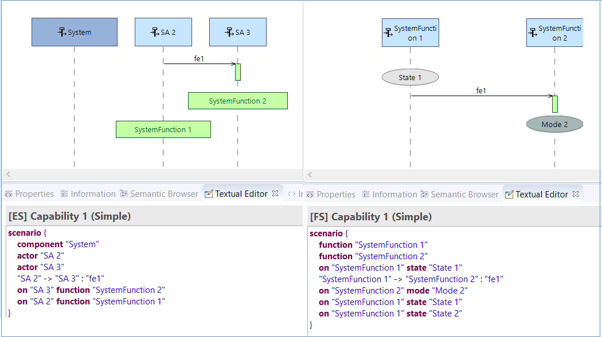

Once the Textual Editor Add-On is installed, the user will be able to edit scenarios in textual mode.
The embedded Textual Editor can be opened from the View menu bar, as in the image below:

After the embedded Textual Editor is activated from the View menu bar, when opening a new scenario diagram (OES, OAS, IS, FS, ES), the editor view will display the textual content of the associated Capella scenario and the user shall be able to edit a scenario.
If the user has multiple Capella scenario diagrams opened, when switching tabs to another scenario diagram, the text editor will be updated with the content from the new diagram and the editor will be linked to the new diagram.
The syntax supported in the textual editor for IS, FS, ES Capella Scenarios is presented in the following paragraphs.
Depending on the type of scenario (OES, OAS, IS, FS, ES) and the architectural level, instance roles can be inserted by specifying the keyword (actor, component, configuration_item, entity, role, function, activity) and the name of the instance role. If the represented part for the inserted instance role does not exist, an error is displayed.
| Keyword | Details |
| actor | It will create an instance role representing an actor; this keyword is available for the IS, ES diagrams at Operational, System, Logical an Physical Level. |
| component | It will create an instance role representing a component; this keyword is available for the IS, ES diagrams at System, Logical and Physical Level. |
| configuration_item | It will create an instance role representing a configuration item. This keyword is available for the IS diagrams at EPBS Level. |
| entity | It will create an instance role representing an entity. This keyword is available for the OES diagrams at Operational Level. |
| role | It will create an instance role representing a role. This keyword is available for the OES diagrams at Operational Level. |
| function | It will create an instance role representing a function. This keyword is available for the FS diagrams. |
| activity | It will create an instance role representing an activity. This keyword is available for the OAS diagrams. |
The user can insert messages between defined participants assuming the fact that the exchange already exists between the selected source and the target participant. The following elements and keywords can be used in the textual editor:
| Element | Syntax | Details | Examples |
| sequence message | "source" -> "target" : "exchange" | Insert a sequence messages between the source and the target instance roles already defined in the text editor. A sequence message can be declared with withExecution and withReturn keywords. | "SA 2" -> "SA 3" : "msg1" |
| lost message | "source" ->o : "exchange" | Insert a lost sequence messages starting on the given source. | "SA 2" ->o : "msgLost" |
| found message | o-> "target" : "exchange" | Insert a found sequence messages having the given target. This type of message can be use with the withExecution keyword. | o-> "SA 3" : "msgFound" |
| arm timer | ->> "timeline" : "message" | Add an arm timer on the given timeline. This type of message can be use with the withExecution keyword. | ->> "SA 3" : "Arm Timer" |
| create message | "source" ->+ "target" : "exchange" | Insert a create messages between the source and the target instance roles already defined in the text editor. | "SA 2" ->+ "SA 3" : "cmsg" |
| delete message | "source" ->x "target" : "exchange" | Insert a delete messages between the source and the target instance roles already defined in the text editor. | "SA 2" ->x "SA 3" : "dmsg" |
| activate execution | withExecution | The withExecution keyword is used to mark that the execution of a message is not immediately ended. The execution will end where the deactivation message is found. The withExecution keyword can be used in the same time with the withReturn keyword. | "SA 2" -> "SA 3" withExecution: "msg1" |
| deactivate execution | deactivate "target" | The deactivate keyword is used to mark where a message execution is ending. The deactivate keyword mandatory if we have a sequence message whose execution is not immediately ended. We must also add the withExecution keyword on the sequence message if the message requires deactivation. | "SA 2"
-> "SA 3"
withExecution : "msg1"
deactivate "SA 3" |
| return branch | withReturn | The withReturn keyword is used to mark that a message has a return. The withReturn keyword can be used in the same time with the withExecution keyword. | "SA 2" -> "SA 3" withReturn : "msg1" |
In Capella, we always activate an execution immediately after each sequence message. In case of a simple message, whose execution ends immediately, the withExecution and deactivation keywords are not required. However if we type the withExecution keyword, we must specify the deactivation point, otherwise a validation error is displayed in the text editor.

The user can define a combined fragment in text using the syntax below:
| Element | Syntax | Description |
| ALT |
alt "condition A"
over "timeline1", "timeline2",… {
[something] } else "condition B" { [something_else] } else "condition C" { [something_else] } |
It will insert an ALT type of combined fragment over the given timelines. |
| PAR |
par "condition A"
over "timeline1", "timeline2",… {
[something] } "condition B" { [something_else] } "condition C" { [something_else] } |
It will insert a PAR type of combined fragment over the given timelines. |
| OTHER | LOOP, ASSERT, CONSIDER, CRITICAL, IGNORE, NEG, OPT, SEQ, STRICT, UNSET' | It will insert the given type of combined fragment over the given timelines. |

The use can insert states, modes and allocated functions in the textual editor using the syntax below:
| Element | Syntax | Description |
| state | on "Timeline" state "State_name" | It will insert a state on a given timeline. |
| mode | on "Timeline" mode "Mode_name" | It will insert a mode on a given timeline. |
| function | on "Timeline" mode "Function_name" | It will insert an allocated function on a given timeline. |

The following syntax can be used in order to define references in the textual editor:
| Element | Syntax | Description |
| reference | ref "ref_scenario" over "timeline1", "timeline2" | It will insert a reference to a scenario over the given timelines. |

In order to maintain consistency between diagram and text, two buttons are available:

Textual validations are added in the editor, to prevent the user from doing invalid operations.
| Validation | Description |
| 'Represented part does not exist!' | Checks that a represented part exists for the instance role used in the text editor. |
| 'Function does not exist!' | Checks that the function exists. |
| '<keyword> can not be used in this diagram!' | Check that the participant keyword can be used in the type of scenario diagram. <keyword> can be any participant: actor, component, entity, function, activiy, role, configuration_item. Ex: actor cannot be used in the FS diagrams. |
| 'Duplicated participant!' | Checks that only a timeline of the same instance role is used. |
| 'Timeline not defined in text editor!' | Checks that the given timeline involved in message, state fragments, combined fragments is defined in the text editor as participant. |
| 'Exchange does not exist between <source> and <target>!' | Checks that an exchange exists between the given source and target in a sequence message. |
| 'Exchange does not exist from <source>!' | Checks that an exchange exists starting on the given source in a lost message. |
| 'Exchange does not exist to <target>!' | Checks that an exchange exists to the given target in a lost found. |
| 'Exchange type can not be used, expected <type>' | Checks that a type of exchange (Component Exchange or Functional Exchange) is used in a ES diagram. <type> can be CE or FE, if one of them is used, then the user can only add a type of exchange. |
| 'Deactivation keyword expected for a withExecution message!' | Checks that a withExecution message is closed by a deacitvation on the given target timeline. |
| 'Deactivation keyword not expected!' | Checks that the activation keyword is put after a withExecution message and that the deactivated target is the one specified in the withExecution message. |
| 'Create or delete message can not be used in this diagram!' | Checks that a create or a delete message are used only in the allowed diagrams. |
| 'Arm Timer can not be used in this diagram!' | Checks that an arm timer message is used only in the allowed diagrams. |
| 'Lost message can not be used in this diagram!' | Checks that a lost message is used only in the allowed diagrams. |
| 'Found message can not be used in this diagram!' | Checks that a found message is used only in the allowed diagrams. |
| 'Invalid element! Source and target must be different!' | Checks that the source and target involved in a sequence message are different. |
| 'Element <timeline> can not be used at this point! A delete message was already defined on this timeline.' | Checks that a delete message on the given timeline was not encountered before using it in the current point. Cannot use the timeline after a delete occured on the timeline. |
| 'Target <target> can not be used in a create message at this point! Other operations were already defined on this timeline.' | Checks that a create message is the first event occuring on a timeline. |
| 'This <state_fragment> does not exist or is not available for <timeline>' | Checks that a state, mode, allocated function, can be used on the given timeline. |
| 'Expected else keyword!' | Checks that the 'else' keyword is present for the 'alt' combined fragment. |
| 'Unexpected keyword!' | Shows an error if the keyword is not expected before expression of an operand in a combined fragment. Ex: 'else' keyword not expected for other that 'alt'. |
| 'Timelines covered by this <combined_fragment_type> must be a subset of the parent covered timelines' | Checks that the covered timelines in an inner combined fragment is a subset of the covered timelines in the parent combined fragment. |
| 'Timeline not covered by this <combined_fragment_type>!' | Checks that the timelines involved in a message that belongs to a combine fragment are covered by the combined fragment. |
| 'Duplicated timeline!' | Checks that a timeline is not duplicated when using it over a reference. |
| 'Referenced scenario does not exist!' | Checks that a referenced scenario exists. |
| 'Timelines covered by this reference must be a subset of the parent covered timelines' | Checks that the timelines in a reference are a subset of the parent container covered timelines. |
The user can use Ctrl+Space to see suggestions of the allowed keywords in the editor or proposals of the elements that can be used.
The Textual Editor addon has the following limitations: